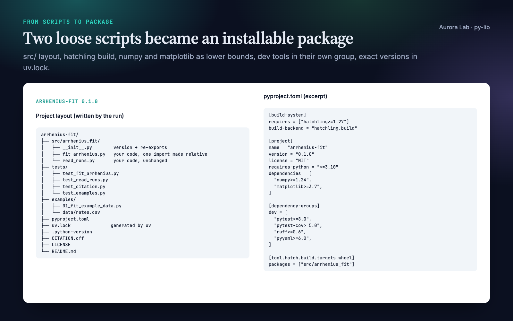
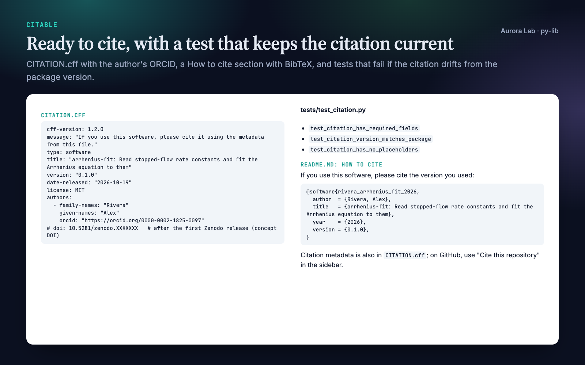
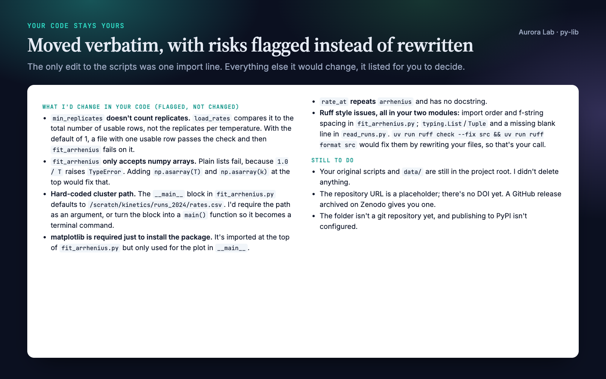
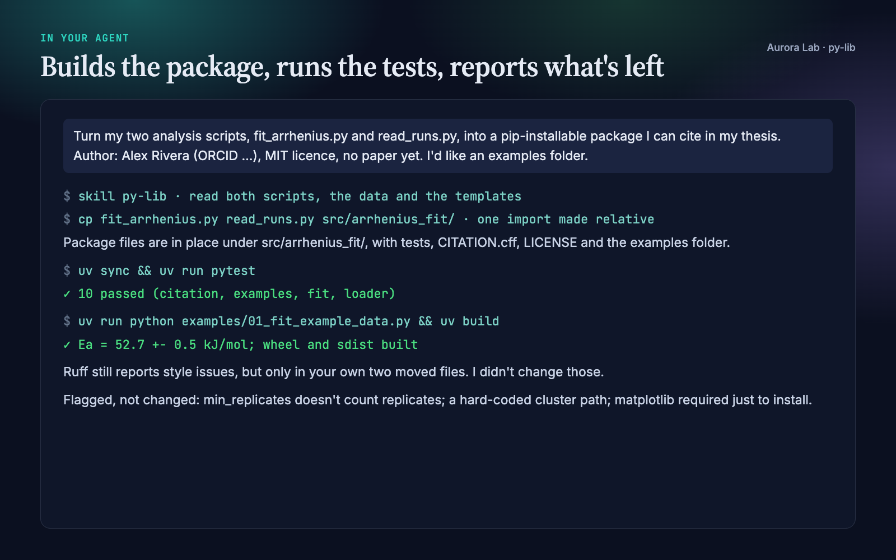

Overview
Research code tends to live as a few scripts that produced a paper's numbers and that nobody else can install. py-lib turns your agent into a careful packaging collaborator that:
- Builds a clean package with one fixed, modern toolchain:
uvfor the environment and lock file,hatchlingto build,ruffto lint,pytestto test, and asrc/layout so tests run against the installed package, not the loose files. - Makes it citable. A
CITATION.cffwith authors, ORCID iDs, licence and version; a README with a "How to cite" section and BibTeX; and a test that fails if the citation is invalid, still holds placeholders, or no longer matches the package version. - Records what your results ran on. Lower bounds in
pyproject.tomlfor people installing the package, exact versions in a committeduv.lockfor people reproducing your results, and the Python version in.python-version. - Keeps your code yours. Existing scripts are copied in verbatim. The only edit is turning imports between your own scripts into package imports. Anything else it would change is flagged for you to decide.
- Runs the checks (
uv sync,ruff,pytest) and hands over the commands and a list of what is still a placeholder.
Quick start
- Get the skill from Agensi (free) and add it to your agent (Claude Code, Codex CLI, Cursor, Gemini CLI or any agent that loads SKILL.md skills).
- Have Python 3.10+ and uv on the machine. Without uv the agent still writes every file and gives you the commands to run later.
- Ask in plain words.
Example requests:
- "Turn fit.py and io_utils.py into a package I can cite in my paper. Authors: … MIT licence."
- "New Python project for a spike-sorting method: scaffold it with CI and an examples folder."
- "Add a CITATION.cff and a How to cite section to this repo."
- "How do I get a DOI for this code? Prepare the release."
- "Pin the dependencies so reviewers can reproduce Figure 3."
What you get
Everything below comes from a real run: a fresh agent session with only this skill installed, given two synthetic analysis scripts (an Arrhenius fit and a CSV loader), a small dataset and the request shown in the session card. The file cards show excerpts of the files it wrote.




How it works
Two starting points
- From existing scripts: the agent reads every file, proposes how they map into the package (which module goes where, what gets re-exported), and names the one edit it will make: imports between your own scripts become package imports. It copies the files in and leaves your originals where they are.
- From an idea: it asks at most three questions (what the package does, what a first call looks like, what it is called) and scaffolds the same structure with stub functions, so the project installs and its tests run before any real logic exists.
Before writing files it asks once for authors (with ORCID iDs and affiliations if you have them), the licence (MIT by default), whether there is a paper to cite, and which extras you want. Anything you skip becomes a placeholder that the handoff lists.
Flagged, not fixed
Moving code that produced someone's results is the riskiest step, so the agent reports these and lets you choose:
- code that runs on import (loading data, fitting, plotting,
plt.show()); - absolute or machine-specific paths;
sys.pathtricks,import *, or modules that shadow a third-party name;- imports whose package name differs from the import name (
sklearnisscikit-learn,cv2isopencv-python); - ruff findings in your moved code. It runs
ruff check --fixorruff formaton your code only if you agree.
The checks
When uv is available and you agree to the first download, the agent runs uv sync (creating .venv and uv.lock), uv run ruff check ., uv run ruff format --check . and uv run pytest, and reports what passed. The tests it writes are smoke tests: each public function on a small input with a known answer, plus the citation test. They show the package works after the move; they do not validate your method.
Files it writes
| File | What it is |
|---|---|
pyproject.toml |
Metadata, run-time dependencies with lower bounds, a dev dependency group, hatchling and ruff settings. |
uv.lock |
Exact versions of every dependency, generated by uv. Commit it. |
.python-version |
The Python version you develop and run your results on. |
src/<name>/ |
Your code (or stubs), with the version read from the installed metadata. |
tests/ |
Smoke tests per public function, and test_citation.py. |
CITATION.cff |
Citation metadata (CFF 1.2.0); GitHub shows it as "Cite this repository". |
README.md |
Description, installation, quick start, How to cite, development commands. |
LICENSE, .gitignore |
Full licence text; ignores for the environment, caches and build output. |
On request it adds examples/ (scripts that import the installed package, with a test that runs every one), notebooks/ (committed without outputs), .github/workflows/ci.yml, a Dockerfile with .dockerignore, and requirements-lock.txt for people who do not use uv. It deletes nothing.
Citation and DOI
The citation test keeps CITATION.cff correct from the first commit: valid YAML, the required fields, a quoted version equal to the package version, and no leftover placeholders.
For a DOI, the agent prepares the release: version bump in pyproject.toml and CITATION.cff, refreshed lock file, release notes. It then gives you a checklist for Zenodo's GitHub integration: the repository must be public, you switch it on in Zenodo, and publishing a GitHub release triggers the archive. It explains which DOI goes where (the version DOI in your paper's Code availability statement, the concept DOI in CITATION.cff and the README badge) and drafts that statement. You perform the GitHub and Zenodo steps yourself; the agent never contacts GitHub, Zenodo or PyPI. Zenodo's screens change from time to time, so check its current help pages when you release.
Reproducibility
uv sync --locked # recreate the exact environment from uv.lock
uv export --no-dev --no-emit-project --format requirements-txt -o requirements-lock.txt
pyproject.toml says what the package needs; uv.lock records what your results ran on. Tag the release that produced a paper's numbers and cite that version. The optional CI workflow tests the oldest and newest supported Python from the lock file, and the optional Dockerfile installs exactly the locked versions.
The research/ folder
py-lib works on its own. If you keep your project in a research/ folder, the plain-file convention the Aurora Lab research skills share, it reads research/refs.bib and research/paper/ to fill in the paper citation, and appends a software entry to research/refs.bib only if you ask. It writes nothing else there.
FAQ
Will it change my code?
No. Existing scripts are copied into the package verbatim and the originals stay where they are. The one edit is turning imports between your own scripts into package imports, and it tells you about it. Everything else it would change is listed for you to decide.
What do I need installed?
Python 3.10+ and uv. The package's dev tools (pytest, pytest-cov, ruff, pyyaml) are installed by uv into the project's .venv.
Does it need internet access?
Only for uv. The first uv sync downloads your package's dependencies from PyPI, and a Python interpreter if the requested one is missing. The agent asks before that first sync. The skill itself contacts nothing.
Can it get me a DOI?
It prepares everything and gives you the checklist for Zenodo's GitHub integration, plus a Code availability statement. You publish the release and switch the repository on in Zenodo; the repository must be public.
Does it publish to PyPI?
No. Once the repository is on GitHub, people can install a tagged release straight from git. PyPI publishing is an optional later step.
Does it test my science?
No. It writes smoke tests that show the package works after the move. Whether your method is correct is outside its scope.
Do I need the other Aurora Lab skills?
No. They share the research/ folder convention if you want to use them together.
Limitations
- Python only, with a fixed toolchain (uv, hatchling, ruff, pytest). It does not set up Poetry, conda or setuptools projects.
- It packages your code but does not judge whether the science is right; its tests are smoke tests on small known inputs.
- It does not create the GitHub repository, publish releases, mint a DOI or upload to PyPI. It prepares the files and gives you the steps.
- Zenodo and GitHub Actions details reflect their documentation as of October 2026. Check the current guides when you release.
Changelog
1.0.0 · October 2026 · First release.